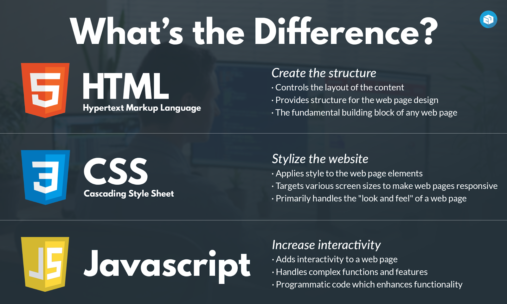

<!DOCTYPE html>
<html lang="en">
<head>
    <meta charset="UTF-8">
    <meta name="viewport" content="width=device-width, initial-scale=1.0">
    <title>htm,css,javascript შედარება</title>
</head>
<body>
    
</body>
</html>
#2 ახსენით კომენტარის სახით რა განსხვევებაა (HTML, CSS და JavaScript) შორის

<h1>Html vs Css vs JavaScipt</h1>

<h1>Html</h1>
<p>html-არ არის პროგრამირების ენა თუმცა მის საშუალებით ჩვენ შეგვიძლია შევქმნათ ვებსაიტი.
 მის საშუალებით საიტზე ჩენ ფუნქციებს ვე ვაკეთბთ მაგრამ htm-საშუალებით ჩვენ ვაკეთბთ საიტის
სტრუქტურას რომელიც სუფთა გვერდია არაანაირი ფუნქციებით.
</p>

<h1>Css</h1>
<P>css-არ არის პროგრამირების ენბა მაგრამ უკვე მის საშუალებით ჩვენ შეგვძლია html სუფთა 
გვერდი ავავსოთ მივცეთ დიზაინი გავალამაზოთ საიტი მაგალითად ტექსტი გავადიდოთ ფერი 
შევუცვალოთ და ასეთი მსგასვსი ფუნქციები რომლებიც დაგვეხმარებიან საიტის გალამაზებაში.
</P>

<h1>JavaScript</h1>
<p>javascipt-არის პროგრამირების ენა და იგი ჩვენ გვეხმარება მივცეთ საიტს ფუნქციები
მაგალითად დავამატოთ მუშა ღილაკები რომლებიც იმუშავებს და მაგალითადმლინკს დავტოვებთ
და ღილაკის დაჭერაზე გადავა მაგ საიტზე ან კი საიტზე ამატებს ანიმაციებს, მენიუს და მოკლედ
რომ ვთქვათ მის გარეშე საიტი ვერ იმუშავებს და იგი საიტს აცოცხლებს
</p>


 


